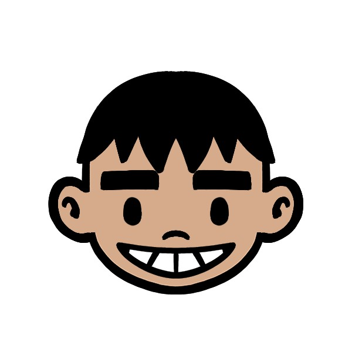
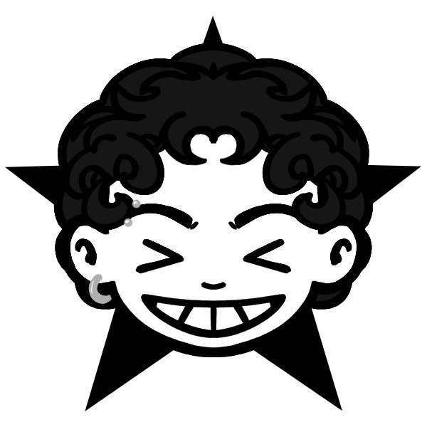

O estúdio
A Susailum é o estúdio de Lucca Lyra e Marcos Ribeiro — design e vibecode lado a lado, sem terceirização: quem assina é quem faz.
O começo
Antes do estúdio existir, já existia a dupla: Lucca no design e na direção de arte, Marcos na criação e na produção. Trabalhos avulsos para páginas de futebol viraram os primeiros clientes fixos — e a percepção de que juntos a entrega era outra coisa.
A virada
Com o Samengo, uma das maiores páginas de humor e futebol do Brasil, nosso trabalho passou a rodar para milhões de pessoas todos os meses. O mídia kit que criamos virou ferramenta de negócio, usado para fechar parcerias com grandes marcas.
A consolidação
O rigor editorial nos levou ao mundo jurídico — Consultor Jurídico e o redesign bauhaus do Anuário da Justiça — e o apetite por marcas com alma nos levou à culinária: Delícia Caseira, Samurai Burger, Aura Wine, Bebe & Bebe. Três especialidades viraram o nosso tripé.
Hoje
Somamos o código ao design: UI/UX e desenvolvimento acelerado por IA, do site da ALL Management Sports a este aqui. A Susailum de hoje entrega a cadeia visual completa — estático, motion, apresentação, marca e web.

Co-fundador · Vídeo & Vibecode
O lado em movimento do estúdio: edição, After Effects, animação de logo, motion para social e transmissões — e o vibecode, prototipando e desenvolvendo sites com IA no fluxo. Se mexe ou carrega no navegador, passou pela mão dele.

Co-fundador · Ilustrador & Designer
O lado que segura o olhar: ilustração autoral, posts, carrosséis, capas editoriais e identidade visual. Do bauhaus do Anuário da Justiça ao vermelho rasgado do Samengo, é o traço por trás de cada peça.
Na prática? Os dois fazem de tudo. Todo projeto passa pelas quatro mãos — a divisão acima é só onde cada um é mais afiado.
Futebol, jurídico e culinária. Conhecemos o público, os códigos e os clichês de cada mundo — para usar os dois primeiros e fugir do terceiro.
Você fala direto com quem cria. Feedback numa mensagem, ajuste no mesmo dia. Dois sócios, zero camadas de gerência.
Cada entrega nasce dentro de um sistema visual. É o que faz um post de terça combinar com a capa de dezembro.
Usamos vibecode e IA para acelerar produção e protótipo — nunca para substituir o olhar. A assinatura é sempre humana.
Quer a gente no seu time?